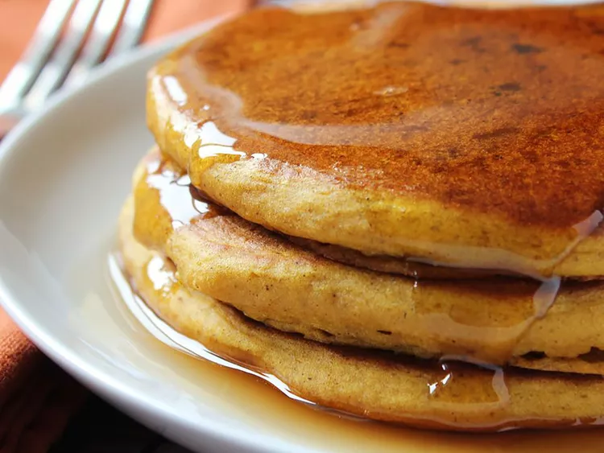

Pumpkin Pancakes

We love them
What's the coziest way to start your day? With a stack of pumpkin pancakes, of course! This recipe will quickly become a staple in your fall breakfast rotation.
Ingredients
- 1 1/2 cups milk
- 1 cup pumpkin puree
- 1 large egg
- 2 tablespoons vegetable oil
- 2 tablespoons vinegar
- 2 cups all-purpose flour
- 3 tablespoons brown sugar
- 2 teaspoons baking powder
- 1 teaspoon baking soda
- 1 teaspoon ground allspice
- 1 teaspoon ground cinnamon
- 1/2 teaspoon ground ginger
- 1/2 teaspoon salt
- Cooking spray
Steps
- Stir together milk, pumpkin, egg, oil, and vinegar in a large bowl until well combined.
- Whisk together flour, brown sugar, baking powder, baking soda, allspice, cinnamon, ginger, and salt in a separate bowl. Add to pumpkin mixture; whisk just until combined.
- Spray a griddle or frying pan with cooking spray; heat over medium-high heat.
- Pour 3 to 4 tablespoons batter for each pancake onto the hot griddle and flatten batter slightly with a spoon.
- Cook until small bubbles appear, about 2 minutes.
- Flip and cook until golden brown, about 2 more minutes. Repeat with remaining batter.
- Serve hot and enjoy!